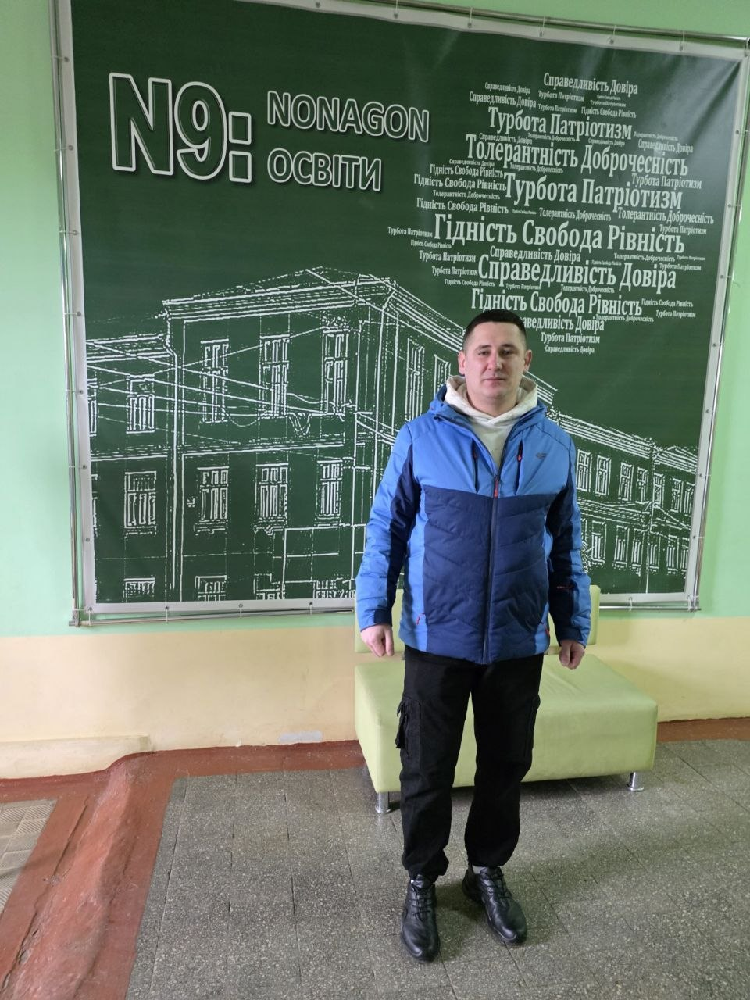
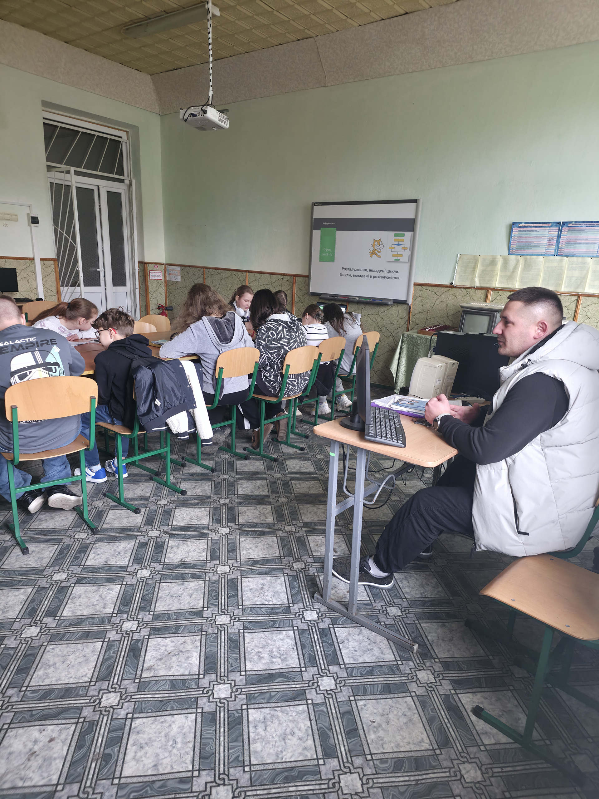
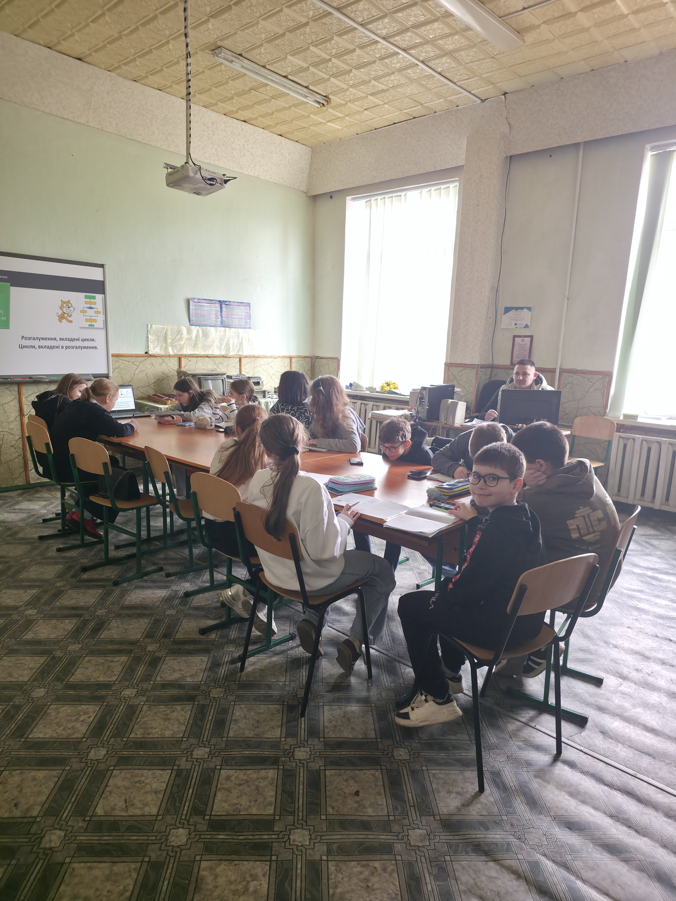
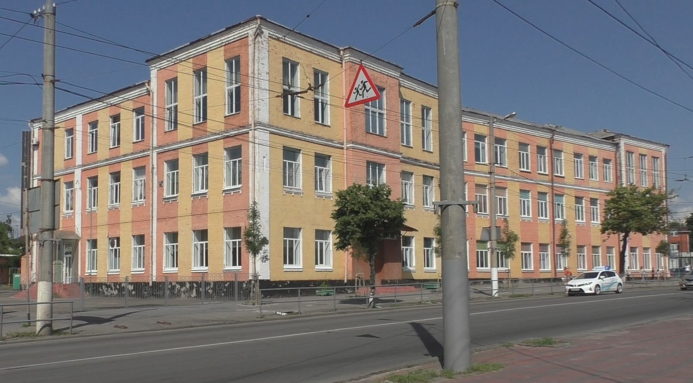

Період педагогічної практики у Вінницькому ліцеї №9 став для мене змістовним етапом професійного становлення, де теоретичні знання трансформувалися в реальний викладацький досвід. Адміністрація закладу та педагогічний колектив створили сприятливі умови для адаптації, забезпечивши доступ до необхідних ресурсів та методичну підтримку. Ознайомлення з внутрішнім розпорядком ліцею дозволило глибше зрозуміти специфіку сучасної шкільної освіти та освітнього середовища, яке орієнтоване на всебічний розвиток особистості учня.

Основна частина моєї діяльності була зосереджена на проведенні уроків інформатики у 5–6 класах, що вимагало особливого підходу до підготовки навчального матеріалу. Робота з цією віковою категорією була надзвичайно динамічною, адже учні середньої ланки демонструють високу цікавість до цифрових технологій. Мені вдалося налагодити продуктивну комунікацію з класами, поєднуючи виклад теоретичних основ із практичними завданнями, що стимулювало пізнавальний інтерес та активність школярів на кожному занятті.
Викладання у 5 класах дозволило вдосконалити навички пояснення складних понять простою мовою, використовуючи ігрові елементи та інтерактивні вправи. Учні охоче долучалися до створення власних цифрових проєктів, що підтверджувало ефективність обраних методів навчання. Важливим аспектом було не лише передати знання, а й навчити дітей критично оцінювати інформацію та безпечно поводитися в мережі, що є критично важливим для сучасного покоління.

Робота з 6 класами була спрямована на поглиблення технічних компетенцій та розвиток логічного мислення через розв’язання алгоритмічних задач. Під час занять я приділяв значну увагу індивідуальному підходу, допомагаючи кожному учневі подолати труднощі під час виконання практичних робіт за комп’ютером. Спостереження за прогресом школярів та їхніми успішними результатами стало найкращим показником результативності моєї викладацької стратегії та джерелом професійного натхнення.
Окремо варто відзначити високий рівень технічного забезпечення кабінетів інформатики, що дозволило повноцінно реалізувати заплановані практичні модулі та продемонструвати учням сучасні можливості програмного забезпечення. Використання мультимедійних засобів та онлайн-платформ зробило процес навчання наочним і доступним, сприяючи кращому засвоєнню матеріалу 5 та 6 класами. Це підтвердило важливість інтеграції новітніх технологій в освітній процес для формування цифрової грамотності майбутніх фахівців.

Завершення практики у ліцеї №9 залишило позитивні враження та дало змогу об’єктивно оцінити власні педагогічні здібності. Я навчився швидко адаптуватися до змін у навчальному плані, ефективно керувати увагою класу та підтримувати дисципліну на засадах партнерства. Цей досвід остаточно переконав мене у правильності обраного професійного шляху та став надійним фундаментом для подальшої діяльності в галузі освіти та інформаційних технологій.
Навчальна програма з інформатики для 6 класу Ривкінд
Переглянути